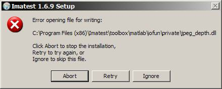
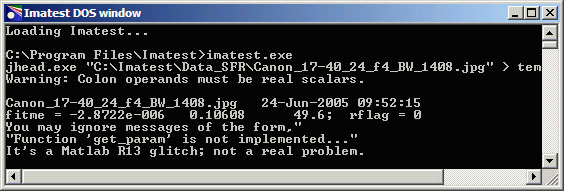

Be sure you have the current version. It may contain fixes to bugs that appeared in earlier versions.
The version number appears in the bar at the top of the Gamutvision™ main window. If it's not the same as the latest version in the Change Log, you should download, install, and run the latest version.
Update installations do not normally require an uninstall of the previous version, but if you encounter difficulties you may want to uninstall and reinstall Imatest. The Uninstaller is accessable from the Start menu (Start, All programs, Gamutvision, Uninstall) or from the Add or Remove Programs function of the Control Panel. It gives you the option of keeping or removing the Matlab runtime library archive, Imatest-lib.exe. (Keep is the default; you have to check the box to remove it.) Keeping it speeds up reinstallations. Remove it only if you don't plan to reinstall Gamutvision or if you have good reason to suspect it may be corrupted (a rare occurrence). Click here for full installation instructions.
Installation can fail if
This message sometimes appears in systems that have strong firewalls. It can usually be corrected by making sure the Matlab runtime library, Imatest-lib.exe, is in the same folder as the Imatest installation file, available from the Download page. You may need to temporarily disable your firewall and manually download the library file. We are working on a more permanent solution. |
 |
If you have receive an indication of a "DNS error" (very rare), try clicking , Run... Enter ipconfig /flushdns in the Open... box, then click .
The most common installation problem is a failure of the Matlab runtime library, Imatest-lib.exe, to download or install properly. This results in an error message of the form,
"The procedure entry point ... could not be located in the dynamic link library ... .dll."
If you get such a message, check to see if file Imatest-lib.exe has been downloaded correctly. Also, check the status of your firewall. Firewalls have caused this problem.
Windows XP Explorer reports its size as 8,513 kB, but the tooltip that appears when you move the cursor over the file name reports its size as 8.31 MB (go figure). If the download failed, a smaller size may be reported.
If you fail to find Imatest-lib.exe or if you suspect that it was downloaded incorrectly, download it by right-clicking here or on any of the links in this section, then reinstall Imatest. Imatest-lib.exe is a self extracting zip file that places the Matlab runtime library in subfolders bin\win32 and toolbox\matlab of the Imatest installation folder. If problems persist, check to see that these folders are populated, then send e-mail to Imatest/Gamutvision support with the text of the error message, if any, that appears in the DOS window.
If Gamutvision does not run as expected, the DOS window that normally stays minimized may contain helpful information. You can open it by clicking on the Gamutvision DOS Window icon  in the taskbar. Here are some potential problems.
in the taskbar. Here are some potential problems.
If you cannot solve the problem, send an e-mail to Imatest/Gamutvision support.
|
The DOS window Gamutvision runs from a DOS window that normally stays minimized. When a run terminates unexpectedly or just stalls, the DOS window may contain useful debugging information. To get the DOS window contents, Click on the Imatest icon in the taskbar (usually at the bottom of the screen) to bring up the DOS window. Procedure 1: Copy and paste text (simple, but a little tricky)
Procedure 2: Copy and paste screen dump image (complex but reliable)

|
For Gamutvision errors that shut down the DOS window (this is rare),
Gamutvision does not currently support device-link profiles. We hope to add that capability in the future. If you try to read a device-link profile, you may get an error that terminates Gamutvision, and this error may repeat when you try to reopen it. If this happens, either (A) delete gamutvision.ini, which is located in the Gamutvision installation folder (C:\Program files\Gamutvision in English language installations), or (B) edit gamutvision.ini (a simple ASCII text file), and remove the line with the offending file. There is no need to replace it.